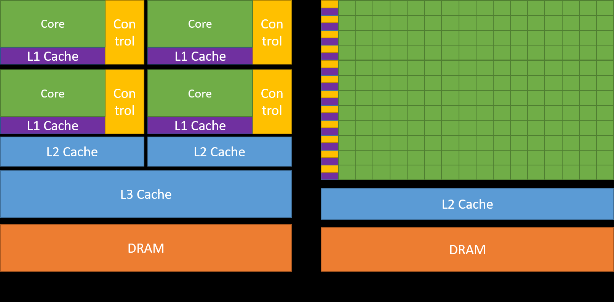
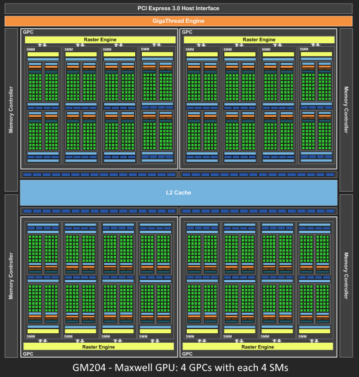
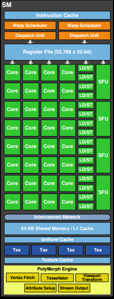
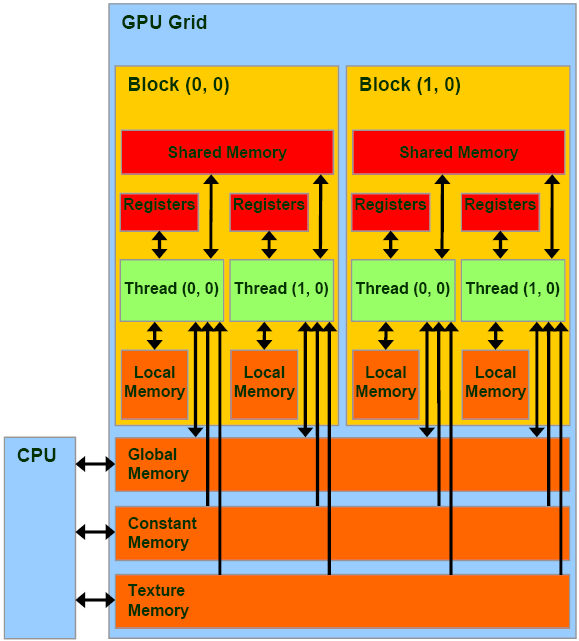
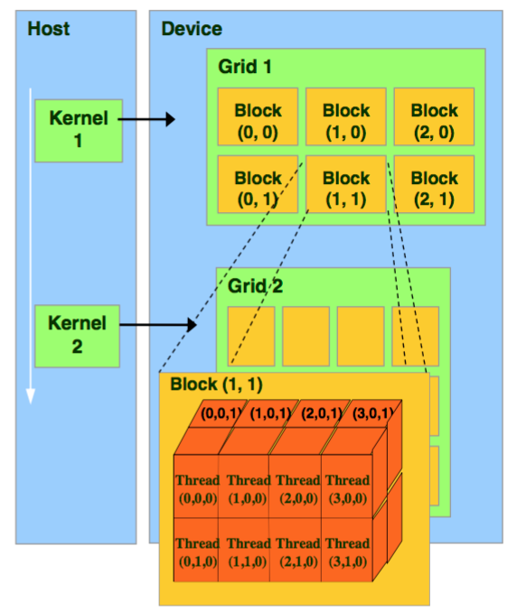
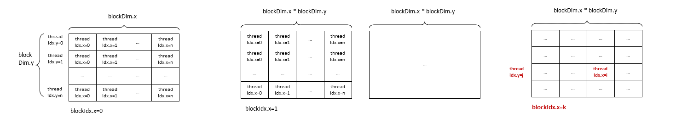
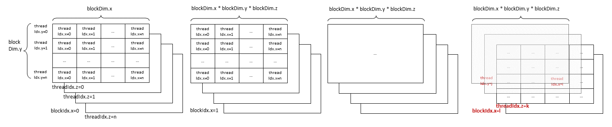
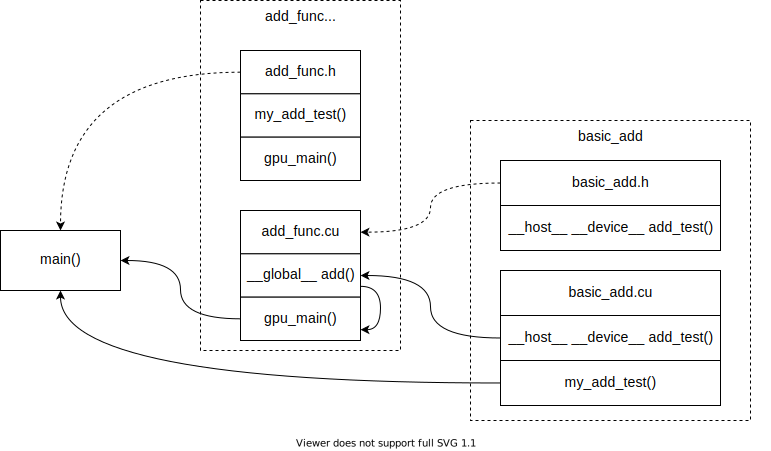

GPU编程
-
cloudcore
-
Zhihu Zihao Zhao CUDA编程入门
-
course:
- NYU
- Northeastern GPU Computing Class at Analogic
- GPU architecture
- [Coursera] Heterogeneous Parallel Programming by Wen-mei W. Hwu (University of Illinois)
- JHU 560.602 GPU/CPU Programming for Engineers
- INTRODUCTION TO HIGH PERFORMANCE COMPUTING SYSTEMS
- Introduction to Numerical General Purpose GPU Computing with NVIDIA CUDA
-
官方
-
Udacity udacity CUDA CS344, ref solution
-
核函数嵌套调用？
-
host多线程调用kernel？
1. 体系架构
1.1. 显卡信息（RTX 2070为例）：
```
CUDA Device Query (Runtime API) version (CUDART static linking)
Detected 1 CUDA Capable device(s)
Device 0: "GeForce RTX 2070"
CUDA Driver Version / Runtime Version 10.2 / 10.1
CUDA Capability Major/Minor version number: 7.5
Total amount of global memory: 8192 MBytes (8589934592 bytes)
(36) Multiprocessors, ( 64) CUDA Cores/MP: 2304 CUDA Cores
GPU Max Clock rate: 1620 MHz (1.62 GHz)
Memory Clock rate: 7001 Mhz
Memory Bus Width: 256-bit
L2 Cache Size: 4194304 bytes
Maximum Texture Dimension Size (x,y,z) 1D=(131072), 2D=(131072, 65536), 3D=(16384, 16384, 16384)
Maximum Layered 1D Texture Size, (num) layers 1D=(32768), 2048 layers
Maximum Layered 2D Texture Size, (num) layers 2D=(32768, 32768), 2048 layers
Total amount of constant memory: zu bytes
Total amount of shared memory per block: zu bytes
Total number of registers available per block: 65536
Warp size: 32
Maximum number of threads per multiprocessor: 1024
Maximum number of threads per block: 1024
Max dimension size of a thread block (x,y,z): (1024, 1024, 64)
Max dimension size of a grid size (x,y,z): (2147483647, 65535, 65535)
Maximum memory pitch: zu bytes
Texture alignment: zu bytes
Concurrent copy and kernel execution: Yes with 3 copy engine(s)
Run time limit on kernels: Yes
Integrated GPU sharing Host Memory: No
Support host page-locked memory mapping: Yes
Alignment requirement for Surfaces: Yes
Device has ECC support: Disabled
CUDA Device Driver Mode (TCC or WDDM): WDDM (Windows Display Driver Model)
Device supports Unified Addressing (UVA): Yes
Device supports Compute Preemption: Yes
Supports Cooperative Kernel Launch: No
Supports MultiDevice Co-op Kernel Launch: No
Device PCI Domain ID / Bus ID / location ID: 0 / 1 / 0
Compute Mode:
< Default (multiple host threads can use ::cudaSetDevice() with device simultaneously) >
deviceQuery, CUDA Driver = CUDART, CUDA Driver Version = 10.2, CUDA Runtime Version = 10.1, NumDevs = 1, Device0 = GeForce RTX 2070
Result = PASS
```
- “zu byte” problem? Ref: What does the ‘zu bytes’ mean?
Take a look at the source code. Presumably it prints the number of bytes with the %zu format of printf(), which is the correct format for size_t variables.
I am guessing that either the ‘%’ character went missing in the source code, or that your host tool chain does not support the %zu format specifier. That format specifier was introduced twenty years ago in ISO C99 (and more recently incorporated into ISO C++11), but I seem to vaguely recall that Microsoft didn’t support it until MSVS 2013.
1.2. Host & device架构：
- Host：CPU及其内存
- Device: GPU及其内存（显存）  Ref: CUDA toolkit documentation
1.3. GPU架构
-
GPU -> GPCs (Graphics Processing Cluster) -> SMs (Streaming Multiprocessor) -> SPs (Stream Processors/Core)
-
SM与SP
(36) Multiprocessors, ( 64) CUDA Cores/MP: 2304 CUDA Cores
36个SM (Streaming Multiprocessors)，每个上面有64个流处理器SP (Stream Processors, CUDA cores) 共2304=36*64个SP
- 一个SP执行一个thread
- 程序会将一个或者多个thread blocks放在一个SM上执行，一次执行的最小线程单位是Warps（32个threads，由一条指令驱动）
- threads在逻辑上并行（从高层/算法/API的角度来看），并不是所有的threads在物理上并行（从底层/实际运行的角度来看） 因此在编写代码时需要注意threads间的同步问题（__syncthreads()）
GPC -> SMs SMs -> SPs/Cores   Ref: Life of a triangle - NVIDIA’s logical pipeline Ref: Fermi logcial pipeline from
Life of a triangle - NVIDIA’s logical pipeline- Shared memory/L1 cache：在同一个SM内的SP共享一块shared memory
- L2 cache在SM之间共享
1.4. Memory的层级（Ref: CUDA Toolkit Documentation: Device Memory Access）
 Ref: CUDA Memory Model
- On-chip，片上，高带宽低延迟
- Shared memory 共享内存 在SM内部，即L1 cache
- Device memory (板上的DRAM)
-
Global memory 全局储存器
Global memory is allocated and deallocated by the host Used to initialize the data that the GPU will work on
- 在device memory中，操作时必须以32-，64-，128-byte对齐。
Global memory resides in device memory and device memory is accessed via 32-, 64-, or 128-byte memory transactions. These memory transactions must be naturally aligned: Only the 32-, 64-, or 128-byte segments of device memory that are aligned to their size (i.e., whose first address is a multiple of their size) can be read or written by memory transactions.
-
Local memory 局部储存器
-
Local memory也在device memory中，和global memory 一样高延迟低带宽
The local memory space resides in device memory, so local memory accesses have the same high latency and low bandwidth as global memory accesses and are subject to the same requirements for memory coalescing as described in Device Memory Accesses.
Local memory accesses only occur for some automatic variables as mentioned in Variable Memory Space Specifiers. Automatic variables that the compiler is likely to place in local memory are:
- Arrays for which it cannot determine that they are indexed with constant quantities,
- Large structures or arrays that would consume too much register space,
- Any variable if the kernel uses more registers than available (this is also known as register spilling).
On some devices of compute capability 3.x local memory accesses are always cached in L1 and L2 in the same way as global memory accesses (see Compute Capability 3.x). On devices of compute capability 5.x and 6.x, local memory accesses are always cached in L2 in the same way as global memory accesses (see Compute Capability 5.x and Compute Capability 6.x).
-
-
Constant memory
The constant memory space resides in device memory and is cached in the constant cache.
-
Texture and surface memory
The texture and surface memory spaces reside in device memory and are cached in texture cache, so a texture fetch or surface read costs one memory read from device memory only on a cache miss, otherwise it just costs one read from texture cache. The texture cache is optimized for 2D spatial locality, so threads of the same warp that read texture or surface addresses that are close together in 2D will achieve best performance. Also, it is designed for streaming fetches with a constant latency; a cache hit reduces DRAM bandwidth demand but not fetch latency.
-
CUDA存储器类型(访存速度由大到小) Register 寄存器：线程私有，通过线程与全局/常数寄存器通信，可读可写 shared memory 共享内存：块内访问，通过线程与全局/常数寄存器通信，可读可写 local memory 局部存储器 global memory 全局存储器：全局访问，可与主机通信，可读可写 constant memory 常量存储器: 全局访问，可与主机通信，只读 texture memory 纹理存储器 内存模型 变量声明 存储器 作用域 生命期 必须是单独的自动变量不能是数组 register thread kernel 自动变量数组 local thread kernel __shared__ int sharedVar shared block kernel __device__ int globalVar global grid application __constant__ intconstantVar constant grid application
1.5. 从物理架构到a scalable programming model
1.5.1. 多线程
 Ref: NYU-CDS: Introduction to GPUs”
-
block，thread与SP/SM不是直接的对应关系。
- 一个thread将会在一个SP上执行
- 每次都会有32的整数倍的threads正在同时被执行（32个thread是一个warp，执行的最小单位）
- 一个block内的所有thread会被分配到同一个SM内，若SM内的SP数量比block的维度小，将有部分threads先被执行，部分threads随后执行，需要进行线程同步（并不知道哪些被先执行哪些随后执行），从程序的角度来看，同步结束后一个threads是同时完成的
-
三个层级Kernel/Grid -> Block -> Thread
- 一个kernel对应一个grid，kernel可能独占一个GPU或者是多个kernel在一个GPU上并发
grid size (# of blocks) block indexing block size (# of threads) thread indexing a kernel/grid gridDim.x blockIdx.x blockDim.x threadIdx.x blockDim.y threadIdx.y blockDim.z threadIdx.z gridDim.y blockIdx.y 同上 同上 gridDim.z blockIdx.z 同上 同上 coarse-grained parallelism fine-grained parallelism 层级关系 将kernel分解为blocks 将block分解为threads 任务规模 任务规模较小 (代码量和执行时间) 数据传输频率与总量 data transferred: infrequently
amount: computation is largedata transferred: frequently
amount: one or a few memory words并行层级 task parallelism thread parallelism coarse sub-problems fine pieces can be solved by blocks of threads solved cooperatively in parallel by all thread within the block 内存 block应相对独立执行（应可以以任意顺序/并行/串行执行，以方便独立的运行在任意数量的cores上，从而避免不同GPU的核心数差异的问题） 同一block内的threads间共享shared memory（局部变量，只在block的lifetime中有效）
每个thread拥有其private local memory -
Total number of registers available per block: 65536
1.5.1.1. Grid & block
- Grid不可索引（不存在gridIdx） GridIdx does not exist. You cannot indexing a grid. Grid与Kernel是一一对应的关系。
- gridDim：一个grid的每个维度所包含的block数量
The number of blocks along each dimension in a grid.
blockIdx：某个block在整个grid中的(x,y,z)坐标
The index of a block in the grid.
E.g.:
Max dimension size of a grid size (x,y,z): (2147483647, 65535, 65535) =
1.5.1.2. Block & thread
-
单个block中包含的最大thread数有限制，E,g,:
Maximum number of threads per block: 1024
-
blockDim：一个block的每个维度所包含的thread数量 The number of threads along each dimension in a block. threadIdx：某个thread在整个block中的(x,y,z)坐标 The index of a thread in the block. E.g.:
Max dimension size of a thread block (x,y,z): (1024, 1024, 64) =
-
Warp：thread都是32个一组执行的，为一个warp
A warp is a collection of threads, 32 in current implementations, that are executed simultaneously by an SM. Multiple warps can be executed on an SM at once.
现象：若一个block中有128个threads，一个block完全并行，若在thread中进行输出printf，会发现thread ID最少是32个连续的
Warp size: 32
1.5.1.3. 在Grid与Block中索引特定thread
-
How to indexing a thread in a grid. （参考CUDA Thread Indexing Cheatsheet）
blockDim threadIdx 1D blockIdx.x *blockDim.x + threadIdx.x 2D blockIdx.x * blockDim.x * blockDim.y + threadIdx.y * blockDim.x + threadIdx.x
3D blockIdx.x * blockDim.x * blockDim.y * blockDim.z + threadIdx.z * blockDim.y * blockDim.x + threadIdx.y * blockDim.x + threadIdx.x
 -
blockIdx的z / The blockIdx.z: 旧版本（2.x之前）中不受支持，新版本（2.x之后）支持 Deprecated version only support 2D, new version support 3D gridDim/blockIdx 参考Why is z always zero in CUDA kernel
On all currently supported hardware, CUDA allows the use of both three dimensional grids and three dimensional blocks. On compute capability 1.x devices (which are no longer supported), grids were restricted to two dimensions.
However, CUDAfy currently uses a deprecated runtime API function to launch kernels, and silently uses only gridDim.x and gridDim.y, not taking gridDim.z in account :
_cuda.Launch(function, gridSize.x, gridSize.y); As seen in the function DoLaunch() in CudaGPU.cs.
So while you can specify a three dimensional grid in CUDAfy, the third dimension is ignored during the kernel launch. Thanks to Florent for pointing this out !
2. 代码基础
2.1. 编译器Compiler
- CUDA代码只能调用native编译器完成编译，在Windows下为cl.exe，Linux下为GCC/G++，无法在Windows下配置minGW完成编译。
2.2. Kernel的调用
- 并行线程块的分解 Splitting parallel blocks
- Ref: CUDA by example: an tinroduction to general-purpos GPU programming, p65
- 如果需要在多个block中启动N个thread，每个block中有k个thread，启动的block数应为(N+k-1)/k，如：
add <<<(N+127)/128, 128>>>(dev_a, dev_b, dev_c);
2.3. Kernel的递归调用
2.4. Kernel中block数量和thread数量的选取
- thread数量应为整数个warp，即32的整数倍个
- 每个block的thread具体数量需要通过试验确定。影响因素主要为：
- 一个block中的thread数量应尽可能的多，使得运算尽可能在一个block内部完成（尽量避免block间运算）。
- 一个block内过多的thread数将影响shared memory的分配（一个SM会将有限的shared memory分配给各个SP，即运行中的thread），thread分配到的内存不足时将影响性能。
- 因此thread数量的选取（32，64，128，256，512，1024）由试验决定。
2.5. Kernel 中内存的运用
2.5.1. 静态shared memroy
2.5.2. 动态shared memory
- 若在kernel中声明动态shared memory，则需要：
-
使用extern关键字
extern __shared__ int sdata[];
此时若源文件中有多个kernel定义，则声明的这个shared memory将被共享
-
并且在调用kernel的时候传入第三个变量，内容为shared memory申请的存储空间大小，如：
add <<<(N+127)/128, 128, sizeof(int)*128>>>(dev_a, dev_b, dev_c);
否则将无法启动kernel 需将数量乘以sizeof(var) 此外若进行parallel reduction，申请的shared memory 大小应为2的指数，并且略大于需计算的数量
-
2.6. kernel中的输出
- 只能用printf进行输出，只支持Fermi（如GTX480）及更高版本设备
2.7. 函数的同步与异步
-
进行Cuda Device Synchronize的时机： 视具体情况而定：
- 如果是连续的GPU操作，下一个GPU调用会等待上一个GPU调用完成后再顺序执行 Ref: When to call cudaDeviceSynchronize?
- 如果接下来的是CPU操作（如核函数与host函数）： 核函数启动为异步，CUDA内核调用完成后控制权立刻返回给CPU，不等待核函数执行结束 因为host的代码由host的编译器编译后再与nvcc编译的device代码进行连接 需要用cudaDeviceSynchronize();等待所有GPU线程运行结束
-
cudaMemcpy函数在host和device之间拷贝数据时为隐式同步，必须等待数据拷贝完成后才返回CPU端继续执行程序
2.8. 内存管理与同步
-
以下表格需要检查和重新整理
| 手动管理host和device之间数据的调度 | Unified memory统一内存调度 | |
|---|---|---|
| 开辟内存 | float *des_xcudaMalloc(&des_x, N*sizeof(float)); | cudaMallocManaged(&x, N*sizeof(float)); |
| 填充数据 CPU->GPU | cudaMemcpy(des_x, src_x, N*sizeof(float), cudaMemcpyHostToDevice); | 声明后对CPU和GPU地址不做区分，可以用memcpy或指针等进行访问 |
| kernel启动后 再次访问dvice需等待同步 | 视具体情况调用cudaDeviceSynchronize(); | 视具体情况调用cudaDeviceSynchronize(); |
| 取回数据 GPU->CPU | cudaMemcpy(src_x, des_x, N*sizeof(float), cudaMemcpyDeviceToHost); | |
| 释放内存 | cudaFree(d_x);free(x); | cudaFree(x); |
2.9. 并行线程间的中间过程同步（kernel内）
- block内同步：
__syncthreads()
- block之间无法进行同步，只能通过调用kernel和在host调用cudaDeviceSynchronize()来完成同步
- cudaThreadSynchronize()：已过时
- cudaStreamSynchronize()：？？？
2.10. Kernel的递归调用
TechBrief: DYNAMIC PARALLELISM IN CUDA
2.11. 内存存取模式
CUDA Lab: Sum of Squares & Matrix Multiplication
2.12. C++与CUDA混合编译
-
多个文件，包含CUDA代码与C++代码：
-
CUDA函数前缀
前缀 说明 无修饰 默认为 __host__ __host__ 由nvcc编译为CPU执行的函数 __device__ 以__inline形式（内联）在代码中展开再编译 __host__ __device__ 由nvcc编译两份，一份为CPU执行的函数，一份为GPU的内联函数 __global__ 用于声明核函数
__global__不能调用以__host__修饰的函数，可以调用以__device__修饰的函数 -
如何共用函数
-
Example 
- CUDA代码部分的中.h头文件的声明和.cu代码中定义的函数必须完全一致（包含同样的CUDA函数前缀），如：
- basic_add.h中声明为
__host__ __device__ int add( int a, int b );
- basic_add.cu中定义为
__host__ __device__ int add(int a, int b){ return a + b; }
- basic_add.h中声明为
- 包含函数前缀的头文件不能被C++代码引用，只能被CUDA代码引用。CUDA函数前缀也不能用于C++源文件中（两者将分开编译，最后一起链接）：
- basic_add.h只能被.cu文件引用（g++/gcc编译器不能识别前缀）
__host__ __device__ int add( int a, int b );
- basic_add.h只能被.cu文件引用（g++/gcc编译器不能识别前缀）
- 希望由CPU调用的函数应进行进一步包装，确保引用时头文件不包含CUDA函数前缀
-
“__host__ __device__ int add(int a, int b)“在.cu文件中包装后为：
int my_add(int a, int b){ return add_test(a,b);}
将声明放在不包含CUDA函数前缀的头文件中，由gcc/g++编译的代码进行调用
-
- 编译时：
- 用nvcc搭配-dc参数为之后的链接生成device code object
- 用nvcc搭配-dlink参数将生成的dc object完成CUDA device code的链接
- 用g++将device code object和dlink处理后生成的object进行链接
-
-
-
nvcc编译参数 参考：Separate Compilation and Linking of CUDA C++ Device Code
参数 备注 -dc generate device code for later linking –dlink 若在最后的链接步骤不使用nvcc（如使用g++），需先用nvcc完成CUDA device code的链接 –x cu treat the input files as .cu files containing both CPU and GPU code. By default, nvcc treats .cpp files as CPU-only code -
编译
- 先通过”nvcc -dc”完成预处理、编译、汇编，生成object文件
- 在使用g++或其他非nvcc编译器完成最后一步链接之前用”nvcc -dlink”完成CUDA object的链接
- 使用g++或其他非nvcc编译器预处理、编译、汇编其余代码，生成object文件
- 使用g++或其他非nvcc编译器链接，生成可执行文件，此时需同时链接CUDA Runtime API等资源，需显式的使用”-lcudart”等参数
-
待解决的问题：
- -rdc=ture参数是什么？怎么用？（relocatable-device-code）
- 其他参数 -dw -link
3. 性能调试
3.1. CUDA warm up
- Ref: Best way to “warm up” the GPU with CUDA?
In the examples of the book “Professional CUDA C Programming” a simple kernel similar to this was defined to be executed on each visible GPU as a warmup:
__global__ void warm_up_gpu(){ unsigned int tid = blockIdx.x * blockDim.x + threadIdx.x; float ia, ib; ia = ib = 0.0f; ib += ia + tid; }
3.2. 使用代码进行衡量
3.2.1. 三种主要指标gpu_programming_overview
-
普通CPU计时：
- GPU核函数异步执行，启动后即立即跳转回CPU的函数继续执行，不阻塞，CPU不知道合适核函数执行结束，除非进行同步。
-
CUDA event计时
cudaEvent_t start, stop; cudaEventCreate(&start); cudaEventCreate(&stop); cudaMemcpy(d_x, x, N*sizeof(float), cudaMemcpyHostToDevice); cudaMemcpy(d_y, y, N*sizeof(float), cudaMemcpyHostToDevice); cudaEventRecord(start); saxpy<<<(N+255)/256, 256>>>(N, 2.0f, d_x, d_y); cudaEventRecord(stop); cudaMemcpy(y, d_y, N*sizeof(float), cudaMemcpyDeviceToHost); cudaEventSynchronize(stop); float milliseconds = 0; cudaEventElapsedTime(&milliseconds, start, stop); -
有效内存带宽的计算
- 没有直接获取带宽利用率的办法，只能靠在多长时间内进行了多少运算进行估计。
- DDR一个时钟上下沿均触发，数据速率应乘以2。
- 理论带宽
，注意频率和带宽的单位，内存位宽为bit，转换为byte需除以8。 - 实际带宽直接用读取与写入的byte数之和除以耗时。
-
GFLOP/s (Giga-FLoating-point OPerations per second)
3.2.2. 其他方式
- devcie函数clock()，Ref: How to measure the inner kernel time in NVIDIA CUDA?
3.3. nvprof
-
nvprof “executable”
直接在其后加编译好的可执行文件作为参数
-
可选参数 （REF: 9.1. Metrics for Capability 3.x）
--metrics achieved_occupancy检测活跃的线程束--metrics gld_throughput--metrics gld_efficiency内存性能--metrics dram_read_throughput
3.4. nvvp
- 可视化性能调试工具
4. 基本算法
4.1. Reduction
-
详情见笔记parallel_reduction
-
常见应用：归约求和sum reduction
-
nvidia: optimizing parallel reduction in CUDA
- Official sample code: NVIDIA_CUDA-your_CUDA_version_Samples/6_Advanced/reduction
- zchee/cuda-sample
- mark-poscablo/gpu-sum-reduction An attempt at an optimized GPU sum reduction, based on this talk by NVIDIA’s Mark Harris.
-
umfranzw/cuda-reduction-example Code and slides
4.2. Scan, histogram
5. DP with CUDA 示例
6. CUDA 代码优化
-
Maxas（已过时）
-
内存访问模式【CUDA 基础】4.3 内存访问模式